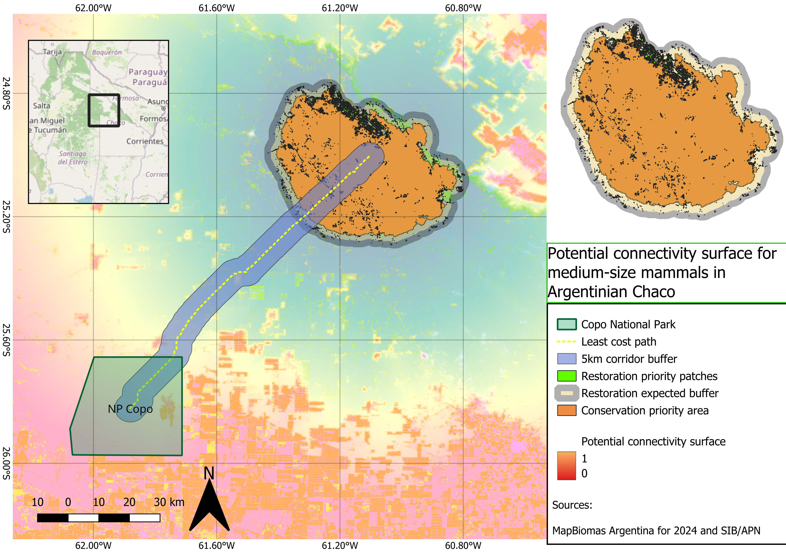

Potential connectivity surface for medium-sized mammals in the Argentine Chaco

1. Project overview
This project models potential functional connectivity for medium-sized to large forest-associated mammals in the Argentine Chaco. The workflow focuses on the area between Copo National Park and the northern forest remnants toward the El Impenetrable region.
The goal was to build a reproducible GIS workflow using open-access spatial data and Python, then visualize the final outputs in QGIS.
Conservation object
Medium-sized to large forest-associated mammals of the Argentine Chaco.
Representative species may include:
- Puma concolor
- Pecari tajacu
- Tayassu pecari
- Mazama gouazoubira
- Leopardus geoffroyi
- Cerdocyon thous
Study area
Copo – El Impenetrable, Argentine Dry Chaco
Connectivity type
Potential functional connectivity
Methods
- Resistance surface
- Least-cost path
- Cost-distance connectivity surface
- Pinch point identification
- Conservation and restoration priority mapping
Interpretation
The outputs represent potential corridors, not confirmed animal movement routes. No GPS, genetic or telemetry data were used. Therefore, the results should be interpreted as a spatial screening product for conservation planning.
2. Data sources
- MapBiomas Argentina 2024 for land-cover data.
- SIB/APN for protected area information.
- QGIS for visualization and final cartographic layout.
- Python for reproducible geospatial processing.
- Optional supporting datasets: OpenStreetMap, GBIF, SRTM or Copernicus DEM.
3. Project folder structure
chaco_connectivity/
│
├── data/
│ ├── raw/
│ ├── processed/
│ └── external/
│
├── outputs/
│ ├── maps/
│ ├── figures/
│ └── tables/
│
├── scripts/
│ ├── 01_create_aoi.py
│ ├── 02_clip_landcover_to_aoi.py
│ ├── 03_create_core_points.py
│ ├── 04_inspect_landcover_classes.py
│ ├── 05_create_resistance_surface.py
│ ├── 06_least_cost_path.py
│ ├── 07_create_lcp_corridor_buffers.py
│ ├── 08_corridor_landcover_composition.py
│ ├── 09_prepare_circuit_inputs.py
│ ├── 10_create_cost_distance_corridor.py
│ ├── 11_identify_pinch_points.py
│ ├── 12_pinch_points_landcover_composition.py
│ ├── 13_create_priority_areas.py
│ └── 13b_refine_restoration_areas.py
│
└── README.md
4. Workflow
Step 1 — Create the area of interest
The first step was to create a rectangular pilot AOI around the Copo–El Impenetrable region.
Output:
data/processed/aoi_copo_el_impenetrable.gpkg
import geopandas as gpd
from shapely.geometry import box
from pathlib import Path
project_dir = Path(__file__).resolve().parents[1]
processed_dir = project_dir / "data" / "processed"
processed_dir.mkdir(parents=True, exist_ok=True)
xmin = -62.40
xmax = -60.50
ymin = -26.30
ymax = -24.50
aoi_geom = box(xmin, ymin, xmax, ymax)
aoi = gpd.GeoDataFrame(
{
"name": ["Copo_El_Impenetrable_AOI"],
"description": ["Pilot AOI for Gran Chaco connectivity analysis"],
},
geometry=[aoi_geom],
crs="EPSG:4326"
)
output_path = processed_dir / "aoi_copo_el_impenetrable.gpkg"
aoi.to_file(output_path, layer="aoi", driver="GPKG")
print(f"AOI saved to: {output_path}")
Step 2 — Clip MapBiomas land-cover data to the AOI
The MapBiomas Argentina 2024 land-cover raster was clipped to the study area.
Input:
data/raw/argentina_coverage_2024.tif
Output:
data/processed/landcover_2024_aoi.tif
from pathlib import Path
import geopandas as gpd
import rasterio
from rasterio.mask import mask
project_dir = Path(__file__).resolve().parents[1]
raw_dir = project_dir / "data" / "raw"
processed_dir = project_dir / "data" / "processed"
processed_dir.mkdir(parents=True, exist_ok=True)
aoi_path = processed_dir / "aoi_copo_el_impenetrable.gpkg"
landcover_path = raw_dir / "argentina_coverage_2024.tif"
output_path = processed_dir / "landcover_2024_aoi.tif"
aoi = gpd.read_file(aoi_path, layer="aoi")
with rasterio.open(landcover_path) as src:
if aoi.crs != src.crs:
aoi = aoi.to_crs(src.crs)
geometries = [geom for geom in aoi.geometry]
clipped_array, clipped_transform = mask(
src,
geometries,
crop=True,
nodata=src.nodata
)
clipped_meta = src.meta.copy()
clipped_meta.update(
{
"height": clipped_array.shape[1],
"width": clipped_array.shape[2],
"transform": clipped_transform,
"driver": "GTiff",
"compress": "lzw"
}
)
with rasterio.open(output_path, "w", **clipped_meta) as dst:
dst.write(clipped_array)
print(f"Output saved to: {output_path}")
Step 3 — Create initial core points
Two initial core points were created to represent the starting and ending areas for connectivity modelling.
Output:
data/processed/core_points.gpkg
from pathlib import Path
import geopandas as gpd
from shapely.geometry import Point
project_dir = Path(__file__).resolve().parents[1]
processed_dir = project_dir / "data" / "processed"
processed_dir.mkdir(parents=True, exist_ok=True)
output_path = processed_dir / "core_points.gpkg"
cores = gpd.GeoDataFrame(
{
"core_id": [1, 2],
"name": ["Parque Nacional Copo", "Parque Nacional El Impenetrable"],
"type": ["protected_area", "protected_area"],
},
geometry=[
Point(-61.88005, -25.82089),
Point(-61.10564, -25.00468),
],
crs="EPSG:4326",
)
cores.to_file(output_path, layer="core_points", driver="GPKG")
print(f"Output saved to: {output_path}")
Step 4 — Inspect land-cover classes
Before assigning resistance values, all MapBiomas classes present inside the AOI were inspected.
Output:
outputs/tables/landcover_classes_2024_aoi.csv
Observed classes included:
| Class | Pixel count |
|---|---|
| 3 | 36,153,632 |
| 4 | 1,582,176 |
| 6 | 85,029 |
| 11 | 409,310 |
| 12 | 1,019,975 |
| 15 | 1,660,828 |
| 19 | 5,342,022 |
| 24 | 59,439 |
| 25 | 146,088 |
| 33 | 89,075 |
| 63 | 71,527 |
| 66 | 356,388 |
| 77 | 132,242 |
from pathlib import Path
import numpy as np
import rasterio
project_dir = Path(__file__).resolve().parents[1]
processed_dir = project_dir / "data" / "processed"
output_dir = project_dir / "outputs" / "tables"
output_dir.mkdir(parents=True, exist_ok=True)
landcover_path = processed_dir / "landcover_2024_aoi.tif"
output_csv = output_dir / "landcover_classes_2024_aoi.csv"
with rasterio.open(landcover_path) as src:
landcover = src.read(1)
nodata = src.nodata
if nodata is not None:
valid_pixels = landcover[landcover != nodata]
else:
valid_pixels = landcover[~np.isnan(landcover)]
classes, counts = np.unique(valid_pixels, return_counts=True)
with open(output_csv, "w", encoding="utf-8") as f:
f.write("class_value,pixel_count\n")
for class_value, pixel_count in zip(classes, counts):
f.write(f"{int(class_value)},{int(pixel_count)}\n")
print(f"Saved table to: {output_csv}")
Step 5 — Create the resistance surface
The land-cover raster was reclassified into movement resistance values. Lower values indicate easier movement, while higher values indicate more difficult movement.
Output:
data/processed/resistance_surface_2024_aoi.tif
| Land-cover class | Interpretation | Resistance |
|---|---|---|
| 3 | Native forest / forest formation | 1 |
| 4 | Savanna / open woody vegetation | 5 |
| 6 | Flooded forest / woody wetland | 5 |
| 11 | Wetland | 15 |
| 12 | Grassland / herbaceous vegetation | 20 |
| 15 | Pasture / modified grassland | 45 |
| 19 | Agriculture | 70 |
| 24 | Urban area | 100 |
| 25 | Bare soil / non-vegetated area | 80 |
| 33 | Water | 60 |
| 63 | Agricultural class | 70 |
| 66 | Agricultural class | 70 |
| 77 | Other / uncertain class | 60 |
from pathlib import Path
import numpy as np
import rasterio
project_dir = Path(__file__).resolve().parents[1]
processed_dir = project_dir / "data" / "processed"
landcover_path = processed_dir / "landcover_2024_aoi.tif"
resistance_path = processed_dir / "resistance_surface_2024_aoi.tif"
resistance_lookup = {
3: 1,
4: 5,
6: 5,
11: 15,
12: 20,
15: 45,
19: 70,
24: 100,
25: 80,
33: 60,
63: 70,
66: 70,
77: 60,
}
with rasterio.open(landcover_path) as src:
landcover = src.read(1)
profile = src.profile.copy()
nodata = src.nodata
resistance = np.full(
landcover.shape,
255,
dtype=np.uint8
)
for lc_class, resistance_value in resistance_lookup.items():
resistance[landcover == lc_class] = resistance_value
if nodata is not None:
resistance[landcover == nodata] = 255
profile.update(
dtype=rasterio.uint8,
count=1,
nodata=255,
compress="lzw"
)
with rasterio.open(resistance_path, "w", **profile) as dst:
dst.write(resistance, 1)
print(f"Output saved to: {resistance_path}")
Step 6 — Generate the least-cost path
The least-cost path was calculated between the two core points using the resistance surface.
Output:
outputs/maps/least_cost_path_copo_el_impenetrable.gpkg
from pathlib import Path
import geopandas as gpd
import numpy as np
import rasterio
from rasterio.transform import rowcol, xy
from shapely.geometry import LineString
from skimage.graph import route_through_array
project_dir = Path(__file__).resolve().parents[1]
processed_dir = project_dir / "data" / "processed"
outputs_dir = project_dir / "outputs" / "maps"
outputs_dir.mkdir(parents=True, exist_ok=True)
resistance_path = processed_dir / "resistance_surface_2024_aoi.tif"
core_points_path = processed_dir / "core_points.gpkg"
output_path = outputs_dir / "least_cost_path_copo_el_impenetrable.gpkg"
with rasterio.open(resistance_path) as src:
resistance = src.read(1).astype(np.float32)
transform = src.transform
raster_crs = src.crs
nodata = src.nodata
if nodata is not None:
resistance[resistance == nodata] = 9999
resistance[resistance <= 0] = 9999
cores = gpd.read_file(core_points_path, layer="core_points")
cores = cores.to_crs(raster_crs)
start_point = cores.iloc[0].geometry
end_point = cores.iloc[1].geometry
start_rc = rowcol(transform, start_point.x, start_point.y)
end_rc = rowcol(transform, end_point.x, end_point.y)
indices, total_cost = route_through_array(
resistance,
start_rc,
end_rc,
fully_connected=True,
geometric=True
)
coords = []
for row, col in indices:
x, y = xy(transform, row, col, offset="center")
coords.append((x, y))
line = LineString(coords)
lcp = gpd.GeoDataFrame(
{
"path_id": [1],
"from_core": [cores.iloc[0]["name"]],
"to_core": [cores.iloc[1]["name"]],
"total_cost": [float(total_cost)],
},
geometry=[line],
crs=raster_crs
)
lcp.to_file(output_path, layer="least_cost_path", driver="GPKG")
print(f"Output saved to: {output_path}")
Step 7 — Create least-cost corridor buffers
Buffers were generated around the least-cost path to represent potential corridor zones at different management scales.
Output:
outputs/maps/least_cost_corridor_buffers.gpkg
Layers:
corridor_1km
corridor_2_5km
corridor_5km
from pathlib import Path
import geopandas as gpd
project_dir = Path(__file__).resolve().parents[1]
outputs_maps_dir = project_dir / "outputs" / "maps"
outputs_maps_dir.mkdir(parents=True, exist_ok=True)
lcp_path = outputs_maps_dir / "least_cost_path_copo_el_impenetrable.gpkg"
output_path = outputs_maps_dir / "least_cost_corridor_buffers.gpkg"
lcp = gpd.read_file(lcp_path, layer="least_cost_path")
lcp_metric = lcp.to_crs("EPSG:32720")
buffer_distances = {
"corridor_1km": 1000,
"corridor_2_5km": 2500,
"corridor_5km": 5000,
}
for layer_name, distance_m in buffer_distances.items():
corridor = lcp_metric.copy()
corridor["buffer_m"] = distance_m
corridor["buffer_km"] = distance_m / 1000
corridor["geometry"] = corridor.geometry.buffer(distance_m)
corridor_wgs84 = corridor.to_crs("EPSG:4326")
corridor_wgs84.to_file(
output_path,
layer=layer_name,
driver="GPKG"
)
print(f"Saved {layer_name} to {output_path}")
Step 8 — Calculate land-cover composition inside corridor buffers
Land-cover composition was calculated for each corridor buffer.
Output:
outputs/tables/corridor_landcover_composition.csv
from pathlib import Path
import geopandas as gpd
import pandas as pd
import rasterio
from rasterio.mask import mask
import numpy as np
project_dir = Path(__file__).resolve().parents[1]
processed_dir = project_dir / "data" / "processed"
outputs_maps_dir = project_dir / "outputs" / "maps"
outputs_tables_dir = project_dir / "outputs" / "tables"
outputs_tables_dir.mkdir(parents=True, exist_ok=True)
landcover_path = processed_dir / "landcover_2024_aoi.tif"
corridors_path = outputs_maps_dir / "least_cost_corridor_buffers.gpkg"
output_csv = outputs_tables_dir / "corridor_landcover_composition.csv"
class_labels = {
3: "Forest formation",
4: "Savanna / open woody vegetation",
6: "Flooded forest / woody wetland",
11: "Wetland",
12: "Grassland / herbaceous vegetation",
15: "Pasture / modified grassland",
19: "Agriculture",
24: "Urban area",
25: "Bare soil / non-vegetated area",
33: "Water",
63: "Agriculture class 63",
66: "Agriculture class 66",
77: "Other / uncertain class",
}
corridor_layers = [
"corridor_1km",
"corridor_2_5km",
"corridor_5km",
]
results = []
with rasterio.open(landcover_path) as src:
raster_crs = src.crs
nodata = src.nodata
for layer_name in corridor_layers:
corridor = gpd.read_file(corridors_path, layer=layer_name)
corridor = corridor.to_crs(raster_crs)
geometries = [geom for geom in corridor.geometry]
clipped_array, clipped_transform = mask(
src,
geometries,
crop=True,
nodata=nodata
)
data = clipped_array[0]
if nodata is not None:
valid = data[data != nodata]
else:
valid = data[~np.isnan(data)]
classes, counts = np.unique(valid, return_counts=True)
total_pixels = counts.sum()
for class_value, pixel_count in zip(classes, counts):
class_value = int(class_value)
pixel_count = int(pixel_count)
percentage = (pixel_count / total_pixels) * 100
results.append(
{
"corridor": layer_name,
"class_value": class_value,
"class_label": class_labels.get(class_value, "Unknown"),
"pixel_count": pixel_count,
"percentage": round(percentage, 2),
}
)
df = pd.DataFrame(results)
df.to_csv(output_csv, index=False)
print(f"Output saved to: {output_csv}")
Step 9 — Prepare a 300 m UTM resistance raster
The resistance raster was reprojected and resampled to 300 m resolution in UTM Zone 20S. This reduced computational load and prepared the data for broader connectivity surfaces.
Outputs:
data/processed/resistance_surface_2024_aoi_300m_utm.tif
data/processed/core_nodes_300m_utm.tif
from pathlib import Path
import geopandas as gpd
import numpy as np
import rasterio
from rasterio.enums import Resampling
from rasterio.warp import calculate_default_transform, reproject
from rasterio.features import rasterize
project_dir = Path(__file__).resolve().parents[1]
processed_dir = project_dir / "data" / "processed"
processed_dir.mkdir(parents=True, exist_ok=True)
resistance_path = processed_dir / "resistance_surface_2024_aoi.tif"
core_points_path = processed_dir / "core_points.gpkg"
resistance_utm_path = processed_dir / "resistance_surface_2024_aoi_300m_utm.tif"
core_nodes_path = processed_dir / "core_nodes_300m_utm.tif"
target_crs = "EPSG:32720"
target_resolution = 300
with rasterio.open(resistance_path) as src:
transform, width, height = calculate_default_transform(
src.crs,
target_crs,
src.width,
src.height,
*src.bounds,
resolution=target_resolution
)
profile = src.profile.copy()
profile.update(
{
"crs": target_crs,
"transform": transform,
"width": width,
"height": height,
"dtype": rasterio.float32,
"nodata": 255,
"compress": "lzw"
}
)
destination = np.empty((height, width), dtype=np.float32)
reproject(
source=rasterio.band(src, 1),
destination=destination,
src_transform=src.transform,
src_crs=src.crs,
dst_transform=transform,
dst_crs=target_crs,
resampling=Resampling.average
)
destination[destination <= 0] = 255
destination[np.isnan(destination)] = 255
with rasterio.open(resistance_utm_path, "w", **profile) as dst:
dst.write(destination, 1)
with rasterio.open(resistance_utm_path) as ref:
ref_profile = ref.profile.copy()
ref_transform = ref.transform
ref_shape = (ref.height, ref.width)
ref_crs = ref.crs
cores = gpd.read_file(core_points_path, layer="core_points")
cores = cores.to_crs(ref_crs)
cores["geometry"] = cores.geometry.buffer(900)
shapes = [
(geom, int(core_id))
for geom, core_id in zip(cores.geometry, cores["core_id"])
]
core_raster = rasterize(
shapes=shapes,
out_shape=ref_shape,
transform=ref_transform,
fill=0,
dtype=np.int16
)
core_profile = ref_profile.copy()
core_profile.update(
{
"dtype": rasterio.int16,
"nodata": 0,
"compress": "lzw"
}
)
with rasterio.open(core_nodes_path, "w", **core_profile) as dst:
dst.write(core_raster, 1)
Step 10 — Create a cost-distance connectivity surface
A normalized connectivity surface was created by summing accumulated movement costs from both core areas and converting the result into a 0–1 connectivity index.
Output:
outputs/maps/cost_distance_corridor_300m.tif
Interpretation:
- 1 = higher potential connectivity
- 0 = lower potential connectivity
from pathlib import Path
import geopandas as gpd
import numpy as np
import rasterio
from rasterio.transform import rowcol
from skimage.graph import MCP_Geometric
project_dir = Path(__file__).resolve().parents[1]
processed_dir = project_dir / "data" / "processed"
outputs_maps_dir = project_dir / "outputs" / "maps"
outputs_maps_dir.mkdir(parents=True, exist_ok=True)
resistance_path = processed_dir / "resistance_surface_2024_aoi_300m_utm.tif"
core_points_path = processed_dir / "core_points.gpkg"
output_cost_corridor = outputs_maps_dir / "cost_distance_corridor_300m.tif"
with rasterio.open(resistance_path) as src:
resistance = src.read(1).astype(np.float32)
profile = src.profile.copy()
transform = src.transform
raster_crs = src.crs
nodata = src.nodata
if nodata is not None:
resistance[resistance == nodata] = 9999
resistance[np.isnan(resistance)] = 9999
resistance[resistance <= 0] = 9999
cores = gpd.read_file(core_points_path, layer="core_points")
cores = cores.to_crs(raster_crs)
start_point = cores.iloc[0].geometry
end_point = cores.iloc[1].geometry
start_rc = rowcol(transform, start_point.x, start_point.y)
end_rc = rowcol(transform, end_point.x, end_point.y)
mcp = MCP_Geometric(resistance)
cost_from_start, _ = mcp.find_costs([start_rc])
cost_from_end, _ = mcp.find_costs([end_rc])
cumulative_cost = cost_from_start + cost_from_end
cumulative_cost[np.isinf(cumulative_cost)] = np.nan
valid = ~np.isnan(cumulative_cost)
min_cost = np.nanmin(cumulative_cost)
max_cost = np.nanmax(cumulative_cost)
normalized_cost = np.full(cumulative_cost.shape, np.nan, dtype=np.float32)
normalized_cost[valid] = (cumulative_cost[valid] - min_cost) / (max_cost - min_cost)
connectivity_index = 1 - normalized_cost
connectivity_index[np.isnan(connectivity_index)] = -9999
profile.update(
dtype=rasterio.float32,
nodata=-9999,
compress="lzw"
)
with rasterio.open(output_cost_corridor, "w", **profile) as dst:
dst.write(connectivity_index.astype(np.float32), 1)
print(f"Output saved to: {output_cost_corridor}")
Step 11 — Identify pinch points
The top 5% of the connectivity surface was extracted as potential pinch points.
Outputs:
outputs/maps/pinch_points_top5_300m.tif
outputs/maps/pinch_points_top5_300m.gpkg
from pathlib import Path
import numpy as np
import rasterio
from rasterio.features import shapes
import geopandas as gpd
from shapely.geometry import shape
project_dir = Path(__file__).resolve().parents[1]
outputs_maps_dir = project_dir / "outputs" / "maps"
outputs_maps_dir.mkdir(parents=True, exist_ok=True)
connectivity_path = outputs_maps_dir / "cost_distance_corridor_300m.tif"
pinch_raster_path = outputs_maps_dir / "pinch_points_top5_300m.tif"
pinch_vector_path = outputs_maps_dir / "pinch_points_top5_300m.gpkg"
with rasterio.open(connectivity_path) as src:
connectivity = src.read(1).astype(np.float32)
profile = src.profile.copy()
transform = src.transform
crs = src.crs
nodata = src.nodata
if nodata is not None:
valid = connectivity != nodata
else:
valid = ~np.isnan(connectivity)
valid_values = connectivity[valid]
threshold = np.percentile(valid_values, 95)
pinch = np.full(connectivity.shape, 255, dtype=np.uint8)
pinch[valid] = 0
pinch[(connectivity >= threshold) & valid] = 1
profile.update(
dtype=rasterio.uint8,
nodata=255,
compress="lzw"
)
with rasterio.open(pinch_raster_path, "w", **profile) as dst:
dst.write(pinch, 1)
mask = pinch == 1
features = []
for geom, value in shapes(pinch, mask=mask, transform=transform):
if value == 1:
features.append(
{
"geometry": shape(geom),
"value": int(value),
"threshold": float(threshold),
"percentile": 95,
}
)
pinch_gdf = gpd.GeoDataFrame(features, crs=crs)
pinch_gdf["area_m2"] = pinch_gdf.geometry.area
pinch_gdf["area_ha"] = pinch_gdf["area_m2"] / 10000
pinch_gdf.to_file(
pinch_vector_path,
layer="pinch_points_top5",
driver="GPKG"
)
Step 12 — Calculate land-cover composition inside pinch points
The land-cover composition of the high-connectivity pinch points was calculated.
Output:
outputs/tables/pinch_points_landcover_composition.csv
Main result:
| Class | Percentage |
|---|---|
| Forest formation | 93.75% |
| Agriculture | 0.10% |
| Pasture / modified grassland | 0.62% |
| Savanna / open woody vegetation | 0.30% |
| Wetland | 2.26% |
| Urban area | 0.00% |
Interpretation:
The highest-connectivity pinch points were overwhelmingly located within native forest formation areas. This suggests that conservation of remaining native forest may be more important than large-scale restoration within the main modelled corridor.
Step 13 — Create conservation and restoration priority areas
High-connectivity areas were classified as conservation priorities because they were mostly associated with native forest. A broader restoration search zone was also created around them.
Outputs:
outputs/maps/priority_conservation_areas.gpkg
outputs/maps/priority_restoration_areas.gpkg
from pathlib import Path
import geopandas as gpd
import rasterio
from rasterio.features import shapes
import numpy as np
from shapely.geometry import shape
project_dir = Path(__file__).resolve().parents[1]
outputs_maps_dir = project_dir / "outputs" / "maps"
outputs_maps_dir.mkdir(parents=True, exist_ok=True)
connectivity_path = outputs_maps_dir / "cost_distance_corridor_300m.tif"
conservation_output = outputs_maps_dir / "priority_conservation_areas.gpkg"
restoration_output = outputs_maps_dir / "priority_restoration_areas.gpkg"
with rasterio.open(connectivity_path) as conn_src:
connectivity = conn_src.read(1).astype(np.float32)
conn_transform = conn_src.transform
conn_crs = conn_src.crs
conn_nodata = conn_src.nodata
if conn_nodata is not None:
valid = connectivity != conn_nodata
else:
valid = ~np.isnan(connectivity)
valid_values = connectivity[valid]
high_threshold = np.percentile(valid_values, 95)
high_connectivity = np.full(connectivity.shape, 255, dtype=np.uint8)
high_connectivity[valid] = 0
high_connectivity[(connectivity >= high_threshold) & valid] = 1
features = []
for geom, value in shapes(
high_connectivity,
mask=high_connectivity == 1,
transform=conn_transform
):
if value == 1:
features.append(
{
"geometry": shape(geom),
"connectivity_class": "high_connectivity_top5",
"threshold": float(high_threshold),
}
)
priority_gdf = gpd.GeoDataFrame(features, crs=conn_crs)
priority_gdf["area_m2"] = priority_gdf.geometry.area
priority_gdf["area_ha"] = priority_gdf["area_m2"] / 10000
priority_gdf = priority_gdf[priority_gdf["area_ha"] >= 10].copy()
priority_gdf["priority_type"] = "Conservation priority"
priority_gdf["interpretation"] = (
"High potential connectivity area, mostly associated with native forest according to land-cover composition."
)
priority_gdf.to_file(
conservation_output,
layer="priority_conservation_areas",
driver="GPKG"
)
restoration_gdf = priority_gdf.copy()
restoration_gdf = restoration_gdf.to_crs("EPSG:32720")
restoration_gdf["geometry"] = restoration_gdf.geometry.buffer(3000)
restoration_gdf = restoration_gdf.dissolve()
restoration_gdf["priority_type"] = "Restoration search zone"
restoration_gdf["interpretation"] = (
"Area within 3 km of high-connectivity zones where transformed land-cover patches could be evaluated for restoration."
)
restoration_gdf["area_m2"] = restoration_gdf.geometry.area
restoration_gdf["area_ha"] = restoration_gdf["area_m2"] / 10000
restoration_gdf.to_file(
restoration_output,
layer="priority_restoration_search_zone",
driver="GPKG"
)
Step 14 — Refine restoration areas
Because the restoration search zone overlapped completely with the conservation area, a refined restoration layer was created by extracting only transformed land-cover classes within the restoration search zone.
Output:
outputs/maps/priority_restoration_transformed_patches.gpkg
from pathlib import Path
import geopandas as gpd
import rasterio
from rasterio.mask import mask
from rasterio.features import shapes
import numpy as np
from shapely.geometry import shape
project_dir = Path(__file__).resolve().parents[1]
processed_dir = project_dir / "data" / "processed"
outputs_maps_dir = project_dir / "outputs" / "maps"
outputs_maps_dir.mkdir(parents=True, exist_ok=True)
landcover_path = processed_dir / "landcover_2024_aoi.tif"
restoration_search_zone_path = outputs_maps_dir / "priority_restoration_areas.gpkg"
output_path = outputs_maps_dir / "priority_restoration_transformed_patches.gpkg"
transformed_classes = {
15: "Pasture / modified grassland",
19: "Agriculture",
24: "Urban area",
25: "Bare soil / non-vegetated area",
63: "Agriculture class 63",
66: "Agriculture class 66",
77: "Other / uncertain class",
}
search_zone = gpd.read_file(
restoration_search_zone_path,
layer="priority_restoration_search_zone"
)
features = []
with rasterio.open(landcover_path) as src:
raster_crs = src.crs
nodata = src.nodata
search_zone = search_zone.to_crs(raster_crs)
geometries = [geom for geom in search_zone.geometry]
clipped_array, clipped_transform = mask(
src,
geometries,
crop=True,
nodata=nodata
)
data = clipped_array[0]
transformed_mask = np.isin(data, list(transformed_classes.keys()))
for geom, value in shapes(data, mask=transformed_mask, transform=clipped_transform):
class_value = int(value)
if class_value in transformed_classes:
features.append(
{
"geometry": shape(geom),
"class_value": class_value,
"class_label": transformed_classes[class_value],
}
)
restoration = gpd.GeoDataFrame(features, crs=raster_crs)
restoration = restoration.to_crs("EPSG:32720")
restoration = restoration.dissolve(by="class_label", as_index=False)
restoration["area_m2"] = restoration.geometry.area
restoration["area_ha"] = restoration["area_m2"] / 10000
restoration["area_km2"] = restoration["area_m2"] / 1_000_000
restoration = restoration[restoration["area_ha"] >= 5].copy()
restoration["priority_type"] = "Restoration priority"
restoration["interpretation"] = (
"Transformed land-cover patch located within the restoration search zone around high-connectivity areas."
)
restoration.to_file(
output_path,
layer="priority_restoration_transformed_patches",
driver="GPKG"
)
5. Final map design
The final map was created in QGIS using the following layers:
- Potential connectivity surface
- Least-cost path
- 5 km corridor buffer
- Restoration priority patches
- Restoration expected buffer
- Conservation priority area
- Copo National Park
- Inset map
- Scale bar, north arrow and coordinate grid
The potential connectivity surface was symbolized from low to high values:
0 = lower potential connectivity
1 = higher potential connectivity
6. Main result
The model identified a least-cost connection between Copo National Park and northern forest remnants. The highest potential connectivity areas were mainly located within native forest formation.
The top 5% pinch point areas were composed mostly of forest formation:
Forest formation: 93.75%
Wetland: 2.26%
Pasture / modified grassland: 0.62%
Agriculture: 0.10%
Urban area: 0.00%
This suggests that the main priority in the modelled corridor is the conservation of remaining native forest, while restoration should be targeted toward transformed patches located near or within the high-connectivity search zone.
7. Limitations
This is a spatial modelling exercise based on resistance assumptions. It does not validate animal movement.
Main limitations:
- No telemetry or genetic data were used.
- Core areas were initially represented using approximate points.
- The resistance surface was based on land-cover classes and expert assumptions.
- The connectivity surface is based on cumulative cost-distance, not full circuit theory.
- The model should be interpreted as a planning and screening tool, not as proof of actual movement routes.
8. Portfolio summary
This project demonstrates a reproducible Python and QGIS workflow for modelling potential ecological connectivity in the Argentine Chaco. It integrates land-cover data, protected area information, resistance-based modelling and spatial prioritization to identify potential corridors, pinch points and conservation/restoration opportunities for medium-sized to large forest-associated mammals.
The workflow is relevant for conservation planning, ecological consultancy, protected area connectivity, restoration planning and landscape-scale biodiversity assessment.